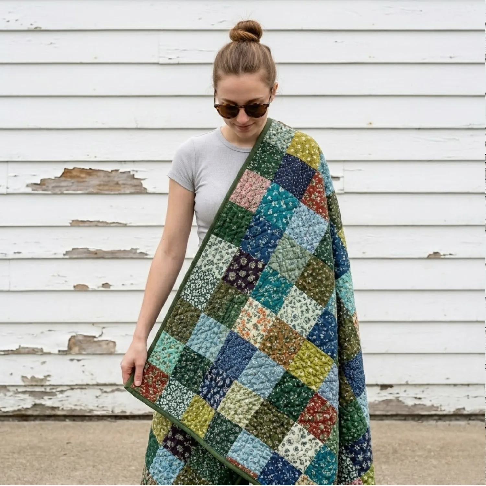
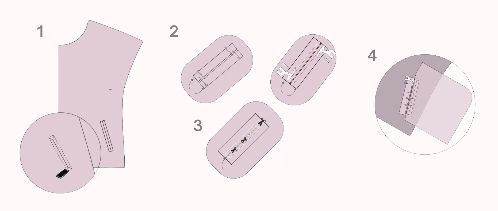
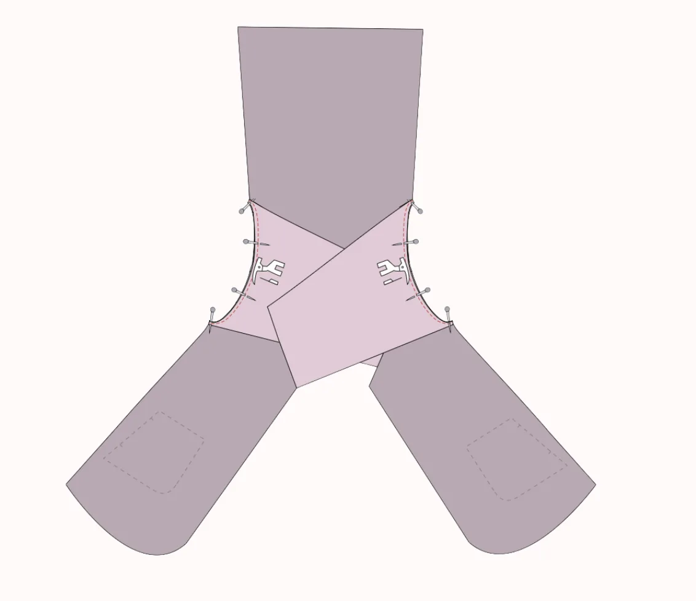
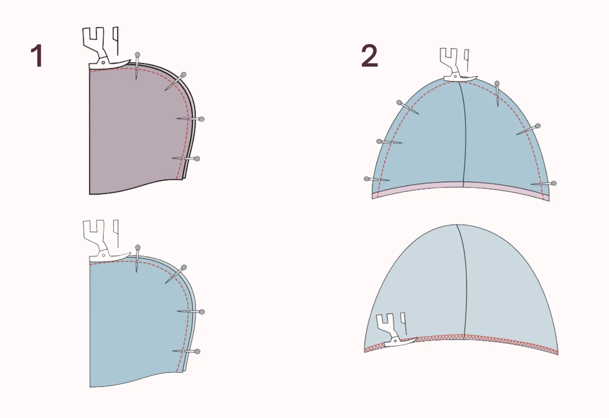
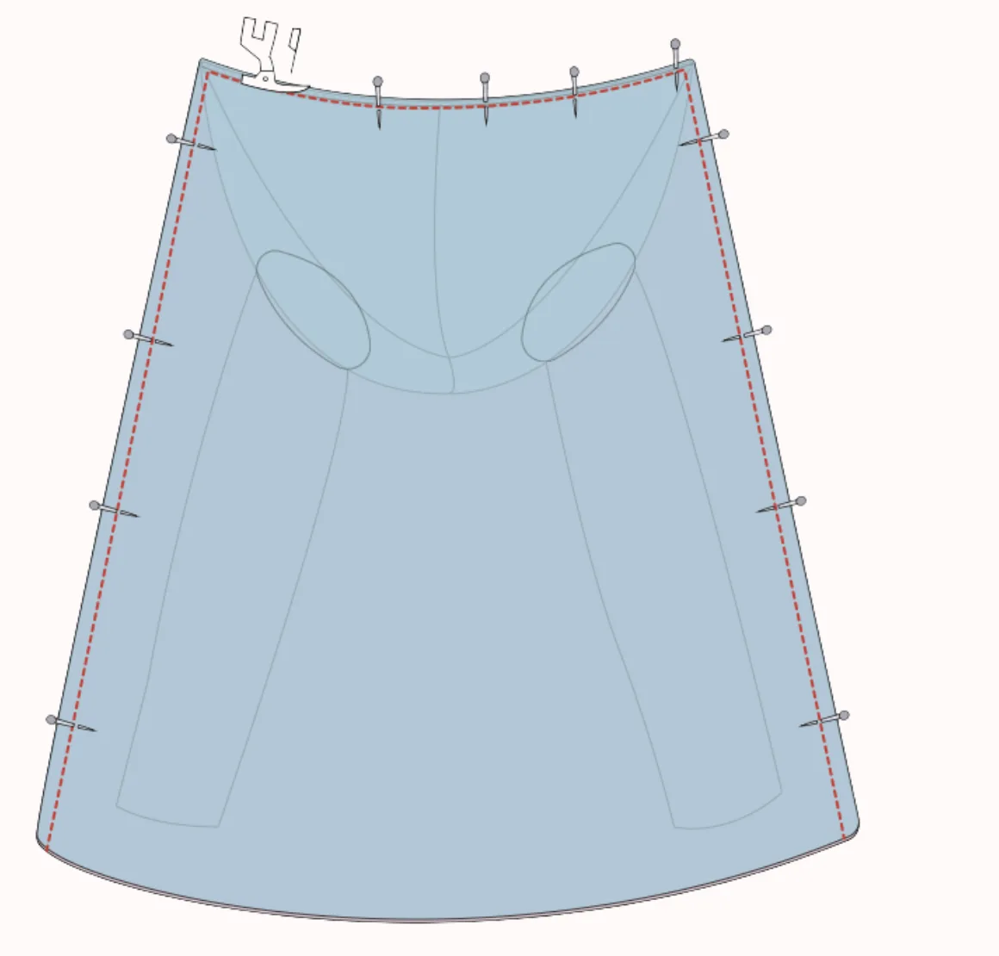
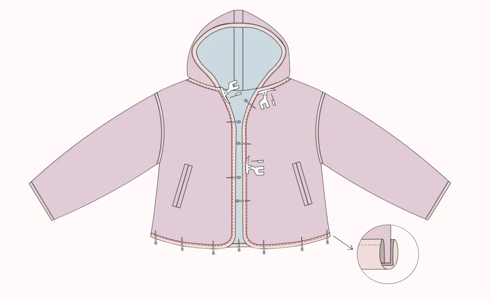
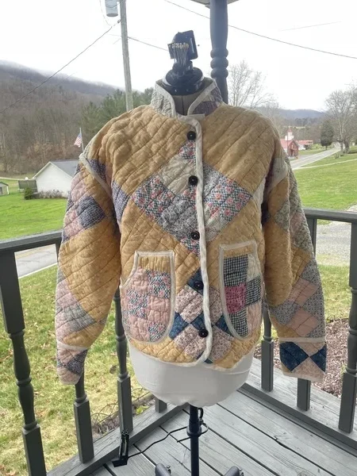
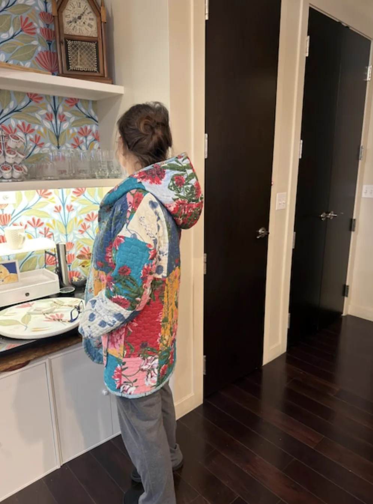
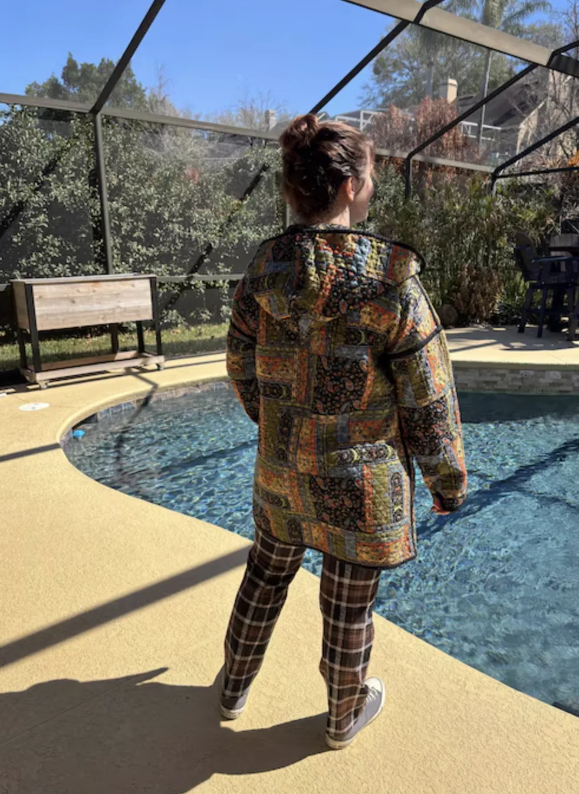

Cropped jackets sit at the intersection of every modern wardrobe — they layer over everything, photograph beautifully, and never stop feeling current. The Laurel Crop Jacket by LU2COHOUSE brings real intention to that familiar shape: a three-piece hood with a softly structured finish, angled slit pockets with button closures, and a fully lined interior wrapped in clean bias-bound edges. Beginners will find the construction logical and the milestones satisfying; experienced sewers will appreciate how well the fit and details land. This guide covers the essential construction stages of this womens quilted jacket sewing pattern — the official pattern gives you every graded piece, the full size chart from XXS to 5XL, and a 21-page illustrated instruction booklet covering all 18 steps of the construction process in precise, beginner-friendly detail.
1 Choosing Fabric: The Best Quilted Textiles for a Crop Jacket
The Laurel Crop Jacket is best crafted in pre-quilted fabrics that provide structure, warmth, and texture without any extra padding. Because of its cropped silhouette and clean construction, fabric choice plays a major role in both the look and the feel of the finished piece.
Pre-Quilted Cotton offers a soft, breathable option that is lightweight yet maintains the jacket's cropped structure — perfect for casual daywear or layering in spring and fall. Pre-Quilted Nylon or Polyester delivers a modern utility aesthetic: durable, slightly water-resistant, and lightweight, making it ideal for sporty or streetwear-inspired designs.
For a casual, textured look with built-in structure, Pre-Quilted Denim holds its shape while keeping the cropped silhouette comfortable and wearable — perfect for urban or retro-inspired styles. And for fall and winter, Pre-Quilted Wool or Wool Blends bring warmth, sophistication, and a luxurious finish. For a truly elevated statement piece, Pre-Quilted Velvet or Velour adds depth and elegance to the cropped silhouette, making it ideal for evening or occasion wear.

From cotton to velvet — choose the pre-quilted fabric that suits your style and season
2 Preparing Your Short Jacket Sewing Pattern Layers
Before cutting your fabric, you need your clothing patterns prepped. For this tutorial, we are using the LU2COHOUSE Laurel Crop Jacket Sewing Pattern — the exact pattern used to create the jacket you see in this guide. Ensure your PDF pattern is printed at full size — meaning your printer settings must be set to "Actual size" with no scaling. Always print the first page only and verify the scale is correct by measuring the 2-inch test square with a ruler before printing all pages.
Additionally, use layered PDF technology to your advantage. Open the file in Adobe Acrobat Reader, click on the "Layers" icon, and click the eye icon to deselect the sizes you do not need. This saves ink and makes your pattern lines incredibly easy to read.

Set your printer to "Actual size" — then verify with the test square before printing all pages
3 How to Choose the Right Size for Your Crop Jacket Pattern
Every body is different, so choosing the correct size is crucial for a great fit. Using a measuring tape, gently measure your bust, waist, and hips, keeping the tape comfortably fitted — not too tight or too loose — to ensure accuracy.
Compare your measurements with the pattern's size chart. The LU2COHOUSE Laurel Crop Jacket sewing pattern covers inclusive sizes from XXS through 5XL, making it one of the most size-inclusive crop jacket patterns available. If your measurements fall between two sizes, we recommend choosing the larger one for a more relaxed and comfortable fit — ideal for a layering piece like this one.
Sewing this exact look along with us?
While this tutorial covers the major milestones, a perfect cropped jacket is all in the details.
To get the exact proportions, the inclusive size chart, and the full Laurel instruction booklet — a 21-page PDF that walks you through all 18 construction steps in thorough, illustrated detail — you will need the LU2COHOUSE Laurel Crop Jacket Sewing Pattern. Available as an INSTANT DOWNLOAD, it includes formats for A4 and US Letter so you can print right at home, along with A0 for large-scale print shops, ensuring you can start cutting right away. The pattern also includes separate layers for every size and size measurements in both cm & inches.


Tools you will need
How to read the illustrations
4 How to Sew Angled Slit Pockets on a Crop Jacket
The Laurel Crop Jacket features angled slit pockets — one of the most refined and functional details in jacket sewing. This pocket style, built using boon pieces, creates a clean, barely-there opening that sits flush against the jacket front for a polished, professional look.
- Mark the pocket placement lines on the right side of the garment front using tailor's chalk. Apply a small piece of interfacing to the marked area on the wrong side for stability if desired.
- Iron interfacing to the wrong side of both boon pieces, then fold each one lengthwise with right sides facing each other and press to create a sharp center crease.
- Place both boon pieces right side down on the garment, aligning them precisely with the marked lines. Pin carefully and stitch along the exact marked lines.
- Cut straight through the center of the stitched rectangle, stopping 1 mm before each end, then clip diagonally into each corner to create small triangles — do not cut through the stitching.
- Push both boon pieces through the opening to the wrong side and press flat so they lie evenly at the center. Fold the small triangle seam allowances inward and stitch them down securely.
- Pin the upper pocket piece to the upper boon and the lower pocket piece to the lower boon, right sides together, and stitch. Bring both pocket pieces together, stitch around the sides and bottom to close the bag, and finish the raw edges with an overlock or zigzag stitch. Press flat.

5 How to Sew Shoulders, Set-In Sleeves, and Finish Armhole Seams
- Lay the back piece flat and place the front piece on top, right sides together. Align the shoulder seams, pin, and stitch with a 1 cm seam allowance. Press the seam open. Repeat for the lining pieces.
- Position the sleeve cap into the armhole right sides facing, align all notches, and secure from both sides with pins. Sew along the edges with a 0.7 cm seam allowance. Repeat with the lining pieces.
- Cut a piece of bias band to match the full length of the armhole seam. Fold it over the raw seam allowance, completely encasing it, and ensure the folded edge covers the seam line.
- Pin the bias band smoothly in place, then topstitch close to the folded edge, catching both layers securely. Press toward the sleeve for a clean, refined interior finish.

6 How to Construct a Three-Piece Hooded Jacket pattern
The three-piece hood gives the Laurel its signature softly structured silhouette — assemble the outer and lining hoods separately before joining them.
- Place the hood panel piece onto the main hood fabric, matching the outer curved edges. Pin securely and stitch along the curved edge. Repeat for the lining pieces. Press all seams to set the shape.
- Place the second main hood piece over the already-attached panel, right sides together, aligning the free curved edge with the panel's remaining side. Pin and stitch to complete the outer hood assembly.
- Open both the outer and lining hoods and place them right sides together, matching center seams. Sew along the front face opening with a 1 cm seam allowance, then turn the hood right side out and serge the bottom raw edge to join both layers.
- Measure the outer curved edge of the hood and cut a bias strip to match. Fold the tape over the curved seam to cover the upper edge, pin, and topstitch close to the folded edge. Press toward the hood.
- Fold the jacket neckline and the hood in half to find their center points. Match the centers right sides together, pin the hood evenly along the neckline, and sew in place using a 0.5 cm seam allowance.

7 How to Fully Line a Cropped Jacket (The Sandwich Method)
A fully lined interior is what separates a truly polished garment from a basic sewing project — it elevates the Laurel Crop Jacket to a professional, refined standard. To achieve a completely clean interior with no raw seams showing, we use the same bagging-out sandwich technique used in our other LU2COHOUSE jacket patterns.
- Join the side seams: place the front and back main pieces right sides together, align all edges, and stitch from the sleeve hem down to the jacket hem using a 1 cm seam allowance. Overlock and press flat. Repeat for the lining pieces.
- Lay the assembled jacket flat with the hood positioned downward and the sleeves folded inward. Place the fully assembled lining directly on top, right sides together, with lining sleeves tucked inside — creating a complete sandwich arrangement.
- Align the center front and neckline edges carefully, pin all the way around, then sew from the bottom hem on the left side and continue around the body. Trim seam allowances along any curved edges for a smooth result.
- Pull the entire jacket right-side out through the bottom hem opening and press all edges firmly with an iron for crisp, clean lines.
- Align the wrist edges of the lining and main fabric right sides together, pin, and overlock to prepare them for the bias band finish.

8 Finishing with Bias Binding and Button Closure
The final construction stage is what truly completes the Laurel Crop Jacket — a continuous run of bias binding that travels from the hem, up both front openings, and around the entire hood neckline edge, finished with a clean button closure. This is the hallmark detail that gives this crop jacket pattern its refined, handcrafted character.
- Measure each wrist opening and cut a bias band to match. Open one folded edge, align its raw edge with the wrist hem right sides together, pin neatly, and stitch along the crease. Fold the band over to the inside to cover the raw edge, topstitch close to the fold, and press. Repeat for the second wrist.
- Measure the full continuous length from one hem edge, up the front, around the hood neckline, and back down the other front to the opposite hem. Cut a single bias band to match, adding a little extra for safety.
- Open one folded edge and begin pinning along the hem and front opening right sides together. When you reach the hood neckline, tuck the hood inward so the bias tape lies flat. Make small snips at any points where the seam wants to fold.
- Stitch along the crease, fold the band over the raw edges to encase them completely, pin in place, and topstitch close to the folded edge. Press carefully for a smooth, professional finish.
- Mark button and buttonhole positions according to the pattern — buttonholes on the right side, buttons on the left. Stitch the buttonholes, then align both sides and mark the button positions through each buttonhole for perfect placement. Sew on the buttons to complete the jacket.

Ready to Sew Your Own Cropped Quilted Jacket?
The Laurel Crop Jacket is the kind of piece you will grab first every morning — and the satisfaction of knowing you made it yourself makes it even better.
The steps above show you the path — the official pattern gives you everything you need to walk it. The instruction booklet alone is 21 pages, covering all 18 construction steps in step-by-step illustrated detail so nothing is left to guesswork. No waiting, no guessing — just great garment sewing from the very first cut.
What you will receive with the Laurel Crop Jacket Pattern:
- PDF sewing pattern — sizes XXS through 5XL
- US Letter printable pattern for home printers
- A4 printable pattern
- A0 printable pattern for large-scale print shops
- Separate layers for every size — easy to print only your size
- Size measurements in both cm & inches
- The complete 21-page instruction booklet — all 18 steps, illustrated in detail
- Instant digital access — no waiting!

[ Made by our community ]
What Sewers Made with our sewing Patterns




Want to explore more womens jacket patterns? We have a massive collection of beginner-friendly clothing patterns tailored for every style!
[ Related Guides ]

Terms of Use: All digital patterns, tutorials, and designs are for personal use only. Unauthorized commercial reproduction or distribution of any pattern or resulting garments is strictly prohibited to protect original designs.